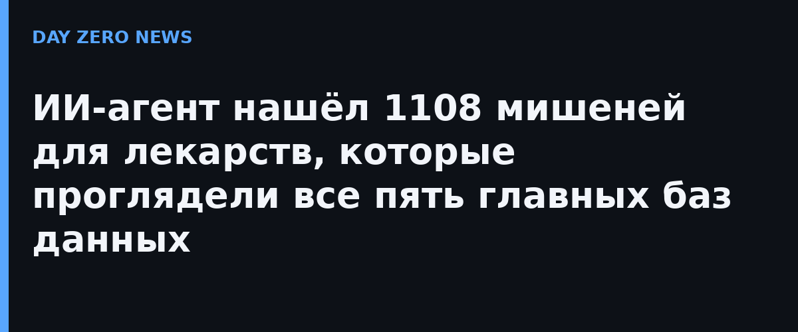

Более 65% всех одобренных лекарств работают так: молекула препарата цепляется за белок на поверхности человеческой клетки. Казалось бы, знай список этих белков и ищи мишени. Но команда Deliverome Project — Ребекка Карлсон из Фонда Херца и биохимик Бобби Холлингсворт — сравнив пять самых используемых баз (UniProt, GO CC, Human Protein Atlas, Cell Surface Protein Atlas и SURFY), обнарурила: вместе они перечисляют 5546 поверхностных белков, а единого мнения по ним нет даже в 200 случаях — все пять согласны лишь на 188 белков. Остальное — предмет молчаливых расхождений.
Чтобы разобраться в противоречиях, команда построила агента на базе Claude Sonnet 4.6, который читает опубликованные исследования и решает для каждого белка: бывает ли он на поверхности клетки. На вручную размеченном тесте SurfaceBench из 147 «спорных» белков агент классифицировал правильно 95,7% случаев; лучшая из баз, UniProt, показала около 90%.
Самое ценное — агент нашёл 1108 белков-кандидатов, отсутствующих сразу во всех пяти базах. Многие из них не выглядят как «классические» поверхностные белки и выползают на мембрану только при определённых условиях — например, при раке. Показательный пример — белок KLK2: все пять баз считают его внеклеточным, хотя якорная форма KLK2 накапливается при раке простаты, и препарат против него уже в третьей фазе клинических испытаний. Один такой пропущенный белок — это потенциально пропущенное лекарство.
Результаты выложены в открытом доступе: интерактивная карта поверхности клетки с доказательствами по каждому белку. Первая статья проекта, «The accessible human surfaceome», опубликована на bioRxiv (DOI 10.64898/2026.10.18.759859) — это препринт, рецензирования он ещё не прошёл, так что цифры стоит читать как сильную заявку, а не окончательный вердикт. Но сама идея уже рабочая: ИИ-агент, который перечитывает всю научную литературу ради одной скучной таблички, оказался внимательнее баз, который люди составляли годами.